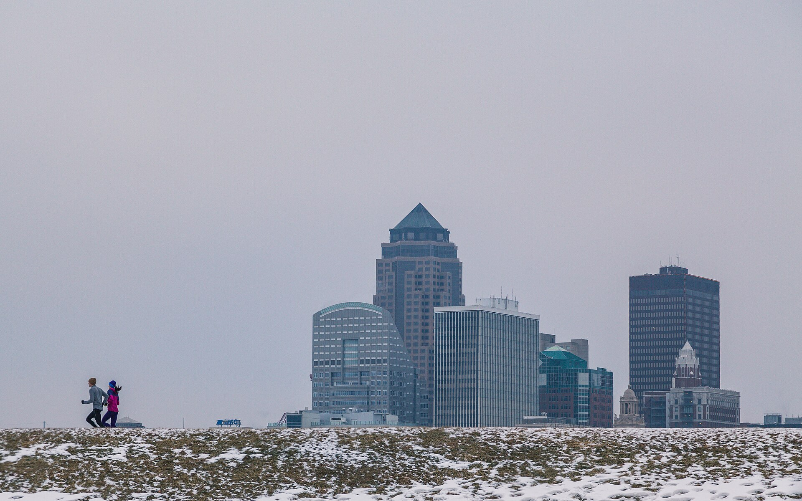
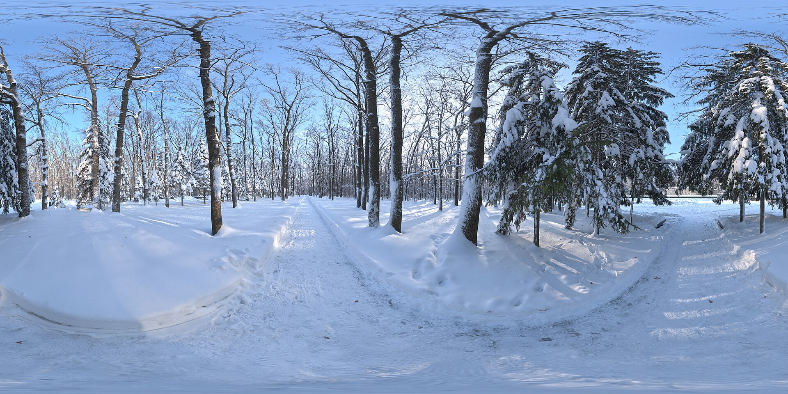

The Winter Mile
2026-01-19
On the first of January, in a fit of optimism I no longer fully remember, I made a rule: run one mile every day, all winter, no matter what. Not fast. Not far. Just one mile, outdoors, every single day until spring. Friends heard "every day" and assumed the distance would quietly grow, or the whole scheme would die by the second week. Neither happened. The mile stayed a mile, and the streak — somewhat to my own surprise — stayed alive.

Photo: Wikimedia Commons
One mile is a humble distance
The beauty of a single mile is that it is almost impossible to argue with. It takes about ten minutes. You can do it before coffee, after supper, in the dark with a headlamp, on the one clear sidewalk your block has to offer. On the worst mornings — the ones with sideways sleet — the whole bargain was this: you only have to be out there for ten minutes, and then you can come back inside and feel superior to the weather for the rest of the day.
A short streak also survives real life in a way ambitious plans never do. A long run needs a route, a free hour, and a body that woke up cooperative. A mile needs shoes and a door. It fits into the cracks of a day, which is exactly why it is still going.
I keep score the old way: a paper calendar on the kitchen wall and a fat marker. Every finished mile earns an X, and the X's have become weirdly sacred. A streak you can see is a streak you protect. There were days — a head cold, a late night, one truly unreasonable blizzard — when the only thing that got my shoes on was the thought of a blank square staring at me over breakfast. Shame is not a noble motivator, but in January, noble is not on the menu. Whatever works, works.
The real sport is getting dressed
Nobody warns you that winter running is mostly a clothing problem. The running itself is simple. The ten minutes beforehand — standing in the doorway doing amateur meteorology — is an advanced discipline. Too many layers and you are a slow-cooking stew by the second corner. Too few and the first gust goes through you like you are not even there.
I check the forecast before I commit to a layer count, and I have learned to dress for how I will feel at minute eight instead of minute one. The Mayo Clinic's guidance on dressing for cold-weather exercise boils down to layers, dry socks, and something over your ears, which sounds like common sense until you have ignored all three on the same morning. The cold itself turns out to be honest company. It burns in your throat for the first two minutes, then your breathing finds a rhythm, and a scarf pulled up over your mouth on the coldest days makes the whole thing feel almost civilized.

Photo: Wikimedia Commons
Dark mornings and quiet streets
Most winter miles happen in the dark, or in that blue half-light just before it, and I have come to love the world at that hour. The streets are empty. Your breath fogs and vanishes. On snowy mornings your footprints are the first marks on the path, a dotted line of evidence that somebody was stubborn here earlier.
One morning deserves honesty: the ice day. Everything — street, sidewalk, the little bridge on my loop — wore the same invisible glaze, and the mile became a careful penguin-shuffle at a pace a toddler could have beaten. It counted. The rule says a mile, outdoors, every day; it says nothing about grace. I did learn to keep a pair of slip-on traction cleats by the door after that, and to treat black ice with the respect usually reserved for hornets. Being stubborn is the point of the streak. Being reckless is not, and the line between them is exactly one slippery corner wide.
I fell into a rabbit hole one evening on USA Track & Field's site, reading about how the professionals structure their winter training, and the comforting news is that they mostly just keep going, too — base miles, patience, nothing glamorous. Nobody's winter looks impressive from the inside. It only looks impressive in February, from the outside, when it has quietly added up.
February tells the truth
Here is the part I did not expect: somewhere in February, the mile got easy. Not the weather — February is nobody's idea of mercy — but the going. Legs that had complained all through January simply went. The route I had memorized curb by curb started to feel shorter. The streak stopped being a challenge I was enduring and became a fact about the day, like brushing my teeth: less a decision than a description.
Spring will come eventually, and the mile will stay. If you are tempted to try your own version, start with a distance too small to fail at and a rule too simple to negotiate. One mile. Every day. See what February says.